Assignment 1 – Presentation and Application Layers
1. Theoretical part
1.1. DNS system
1.1.1. List of Top-Level Domains
The Domain Name System (DNS) is a distributed naming system that associates domain names with information such as IP addresses and mail-server destinations. Without it, users would have to remember numeric addresses for every service they use. A top-level domain (TLD) is the last segment of a domain name, the part that follows the final dot. In www.p.lodz.pl, for example, the TLD is .pl. TLDs are managed by designated registries and can be grouped as follows:
| Category | Examples |
|---|---|
| Generic TLDs | .com, .org, .net, .info, .app |
| Country-code TLDs | .pl, .es, .uk |
| Sponsored / restricted TLDs | .edu, .gov |
| Infrastructure TLD | .arpa |
1.1.2. Hierarchical structure of DNS, Top-Level Domains, DNS queries, DNS delegation
DNS is organized as a distributed hierarchy, usually drawn as an inverted tree. The root is written as a dot (.). Beneath it are the TLDs, followed by registered domains, subdomains and host names. In www.example.com. the labels are read from right to left: root, com, example, then www. No single server stores the whole tree, so each level only needs to know who is responsible for the level below it.
- Root: points resolvers toward the name servers responsible for each TLD.
- TLD: contains delegation information for the domains registered under it. TLDs also categorize domains by purpose, geography or organization, such as
.com. - Authoritative zone: contains the actual records for a domain or subdomain.
- Host name: identifies an individual server or device on the network, e.g.
www.
A DNS client commonly sends a recursive query to a recursive resolver, asking it to return either the final IP address or an error. The resolver then makes iterative queries: a root server refers it to the relevant TLD servers, the TLD server refers it to the domain’s authoritative servers, and an authoritative server returns the requested record. The client only sees one question and one answer; the resolver does all the intermediate work and caches the result.
DNS delegation is the process by which a parent zone tells resolvers that it has handed over authority for a child zone to a different set of name servers. It is implemented with NS records placed in the parent zone. This allows the DNS resolvers to locate and query the delegated DNS servers for the subzone’s DNS records.
1.1.3. DNS record, DNS and reverse DNS
A DNS record is a set of instructions stored on authoritative DNS servers that tells the Internet how to handle a specific domain name. Each record has a name, a record type, a class, a time-to-live (TTL) and record data. Common types are A (IPv4 address), AAAA (IPv6 address), CNAME (alias), MX (mail exchanger), NS (name server) and TXT (free text).
Forward DNS converts a hostname or web address into an IP address, while reverse DNS converts an IP address back into a hostname. Reverse lookups use PTR records stored under the special domains in-addr.arpa (IPv4) and ip6.arpa (IPv6). Forward and reverse records are administered separately, so they do not always match.
1.1.4. Authoritative answer and non-authoritative answer explanation
An authoritative answer comes directly from the official server that holds the zone files and original records for a domain. The answer is marked with the aa flag, and it reflects the current data of the domain owner.
A non-authoritative answer is supplied by a server that does not own the domain, such as a recursive resolver, your ISP or a local cache. It replies using a saved copy from a previous lookup. Non-authoritative does not mean incorrect: cached records are valid until their TTL expires. The downside is that they can be outdated if the owner changed the record recently, which is why a short TTL speeds up changes while a long TTL reduces traffic.
1.1.5. DNS resolver, DNS cache, file /etc/hosts
A DNS resolver is the software component that performs DNS lookups on behalf of an application or user, translating human-readable domain names into numerical IP addresses.
A DNS cache temporarily stores answers together with their TTLs. It reduces latency and repeated network traffic, because a name that was resolved recently does not need to be looked up again.
The /etc/hosts file is a static local text file that maps IP addresses to host names. Depending on the system’s name-service configuration, it is checked before any DNS query is sent.
1.2. Mail system
1.2.1. Protocols POP3, IMAP, SMTP, client-server communication, basic commands
E-mail uses different protocols for message submission, transfer and retrieval. In the client-server model, the client initiates a request and the server returns a response.
| Protocol | Purpose | Example commands |
|---|---|---|
| SMTP | Sends e-mail from a client to a mail server and transfers e-mail between mail servers | EHLO, MAIL FROM, RCPT TO, DATA, QUIT |
| POP3 | Retrieves e-mail from a server and downloads it to the user’s device | USER, PASS, STAT, LIST, RETR, DELE, QUIT |
| IMAP | Accesses and synchronizes messages and folders that stay stored on the server | LOGIN, SELECT, FETCH, STORE, SEARCH, LOGOUT |
A simplified SMTP transaction works as follows: the client introduces itself with EHLO, identifies the envelope sender with MAIL FROM, names one or more recipients with RCPT TO, sends the message after DATA, ends it with a line containing a single dot, and closes the session with QUIT. The server answers every command with a three-digit status code: 250 (success), 354 (start message data), 4xx (temporary failure) or 5xx (permanent failure).
1.2.2. NNTP protocol
NNTP (Network News Transfer Protocol) is an application-layer Internet protocol used to transport, read and post Usenet newsgroup articles between servers and client newsreaders. A newsreader connects to an NNTP server, selects a newsgroup, retrieves article headers or bodies, and may post an article if permitted. Unlike SMTP, which transfers e-mail addressed to specific people, NNTP is designed around public articles organized in newsgroups.
1.2.3. E-mail mailbox, parameters, aliases, address
An e-mail address is a unique identifier used to send and receive electronic mail, structured as username@domain.com. The username is interpreted by the receiving mail system, while the domain identifies who is responsible for handling mail for that address. A mailbox is the server-side or client-managed storage area in which messages are kept. Important mailbox and account parameters include:
- Incoming server name, protocol (IMAP or POP3), port and encryption method.
- Outgoing SMTP server name, port, authentication method and encryption method.
- Username and authentication requirements.
- Mailbox quota, message-size limits and attachment-size limits.
- Folders, retention rules, forwarding and access permissions.
An e-mail alias is an alternate address that delivers messages to another mailbox or group. An alias may be receive-only or may be configured as a permitted sending identity, depending on the mail service. It is not necessarily a separate mailbox and may not have its own password or storage.
1.2.4. E-mail structure: header, separator
An Internet e-mail message has a header followed by a body. Header fields are written as a field name, a colon and a value. Common fields include From:, To:, Date:, Subject:, Cc: and Message-ID:. A blank line separates the header from the body. An example:
From: maria@example.com To: ruben@example.net Subject: Example message Date: Mon, 12 Oct 2026 10:00:00 +0200 Hello Ruben, This is the body of the message.
The header contains metadata and the body contains the message content. Servers also add their own Received: lines while the message travels, which makes it possible to trace its path. The envelope information used by SMTP (the arguments of MAIL FROM and RCPT TO) is distinct from the visible headers.
1.2.5. Attachments, e-mail coding, MIME
MIME (Multipurpose Internet Mail Extensions) is an Internet standard that extends e-mail beyond plain ASCII text. It allows messages to carry rich media, non-English character sets, HTML formatting and file attachments. MIME headers describe the content type and the transfer encoding; common fields are Content-Type, Content-Transfer-Encoding and Content-Disposition. A message with several parts uses a multipart content type, and boundary strings separate the parts.
- Base64 represents binary attachment data as ASCII characters, so it can pass through systems that historically expected text.
- Quoted-printable is another encoding, suited to mostly textual content with a few special characters.
MIME encoding is not encryption: an encoded attachment is not confidential unless encryption is applied separately.
1.2.6. Mailing lists, e-mail gate
A mailing list is a collection of e-mail addresses grouped together to send the same message or newsletter to many recipients at once. Instead of typing hundreds of addresses, the sender writes to a single list address, or uses an e-mail marketing platform, which automatically distributes the message to every subscriber.
An e-mail gate (gateway) is a system that relays, filters, scans, routes or translates messages between mail systems, or between e-mail and another messaging environment. Gateways can enforce security policies, filter malware and spam, or connect separate organizations.
1.2.7. E-mail security, SSL, TLS, PGP, signature
E-mail security is the practice of protecting accounts, content and communications from unauthorized access, loss or compromise. It combines encryption, authentication and protocols that ensure privacy and trust. The key concepts are:
- SSL (Secure Sockets Layer): an older protocol designed to create an encrypted link between a client and a server. It is deprecated and was replaced by TLS because of vulnerabilities.
- TLS (Transport Layer Security): the modern successor of SSL. It encrypts e-mail data in transit, between a client and a server or between mail servers, after a handshake. TLS does not by itself guarantee end-to-end confidentiality across every server that handles a message.
- PGP (Pretty Good Privacy): an encryption program that provides end-to-end encryption. When properly configured, it prevents intermediate mail servers from reading the protected content.
- Digital signature: a mathematical technique that proves who sent a message and that it was not altered in transit. A signature does not encrypt the body on its own.
1.2.8. Spam, blacklists, graylists, spam filtering
- Spam is unwanted bulk messaging, such as junk e-mail or scams, sent to clutter inboxes, spread malware or trick users.
- A blocklist (historically blacklist) records IP addresses, domains or other identifiers with a poor reputation. Mail systems consult these lists when deciding whether to accept a message, but false positives are possible.
- Greylisting temporarily rejects an e-mail from an unknown sender with a retry signal. Legitimate mail servers try again after a few minutes, while most spam bots do not retry. The cost is a short delay for first-time senders.
- Spam filtering is the automated process of scanning, analyzing and blocking unwanted or dangerous e-mails before they reach the main inbox. It combines rules, content scans, blocklists and machine learning (such as Bayesian filters).
2. Practical part
2.1. DNS system
2.1.1. Display DNS settings on your computer using Control Panel and ipconfig. Find the Google DNS server and change DNS settings on your computer to use this server.
First, the original network DNS settings were checked using the command ipconfig /all before applying any changes.
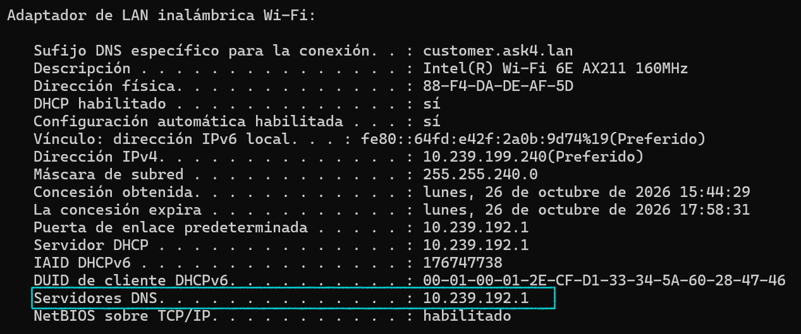
ipconfig /all showing the original local DNS server.Then, the DNS settings were modified in the Windows Control Panel, in the properties of the IPv4 protocol of the network adapter, to use the Google public DNS server 8.8.8.8. After that, we checked again with the command ipconfig /all, which lists the new DNS server in use.
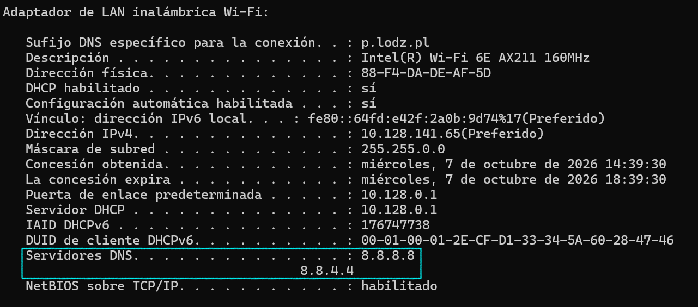
ipconfig /all showing 8.8.8.8 as the new DNS server.2.1.2. Using dig, host, and nslookup, find the following information:
Although the original lab instructions suggest using dig, host, and nslookup, these tests were mostly performed on a Windows environment using nslookup. Additionally, the utilities dig and host were used on a macOS environment to query DNS records.
2.1.2.1. Domain names and corresponding IP addresses of computers in the lodz.pl domain.
Using nslookup, we queried the NS and MX records of lodz.pl to identify its infrastructure servers and their IP addresses. The NS records show which servers are authoritative for the zone, and the MX records show which servers receive its e-mail. Each of these names was resolved to an IP address through an A and AAAA record.
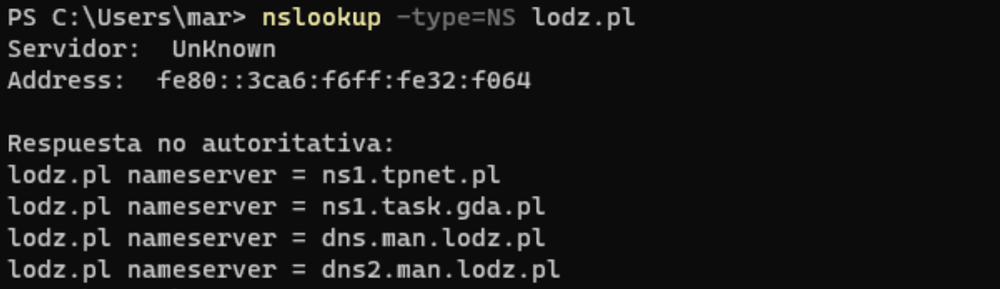

Furthermore, we also queried the domain using dig and host on macOS:
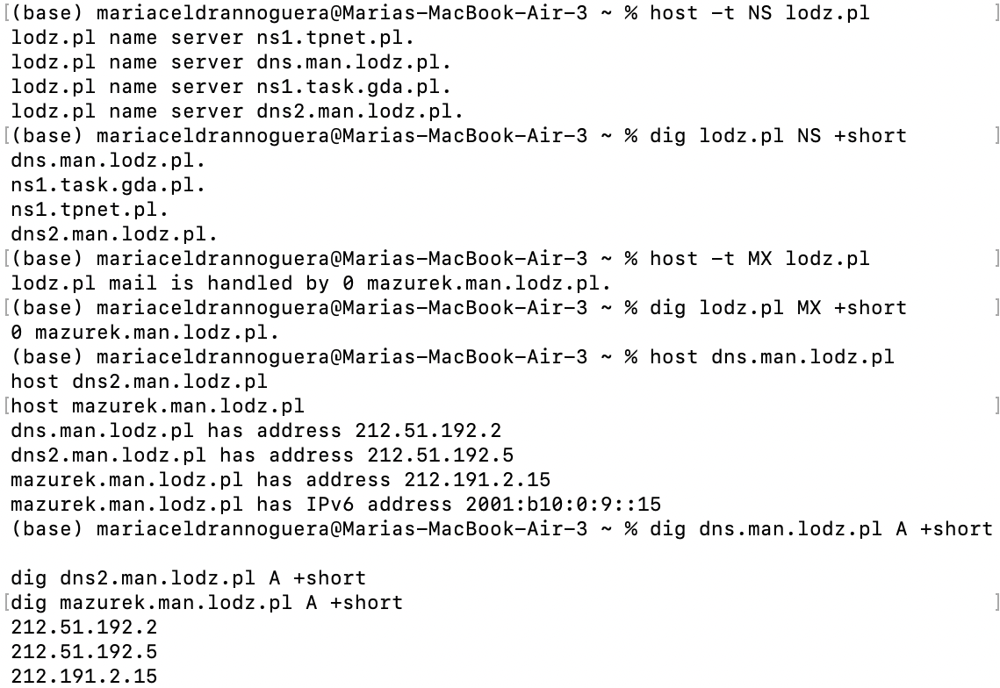
When inspecting the Name Server responses, we discarded ns1.tpnet.pl and ns1.task.gda.pl as internal hostnames because they do not end in .lodz.pl. Additionally, mazurek.man.lodz.pl returns two IP addresses because it runs a dual-stack configuration: an A record resolves to its IPv4 address (212.191.2.15) and an AAAA record resolves to its IPv6 address (2001:b10:0:9::15).
2.1.2.2. A computer somewhere in Europe, outside Łódź, and find all available information about the DNS settings of this computer.
We want to collect all the DNS information that is publicly available for the University of Oxford (ox.ac.uk). We are looking for the record types stored in DNS: the IPv4 and IPv6 addresses (A, AAAA), aliases (CNAME), the mail servers (MX), the authoritative name servers (NS), the text records (TXT), the zone parameters (SOA), the certificate authorization (CAA) and the reverse name of the IP address (PTR).
First, nslookup was used to retrieve the IP address, the mail server and the name server records.
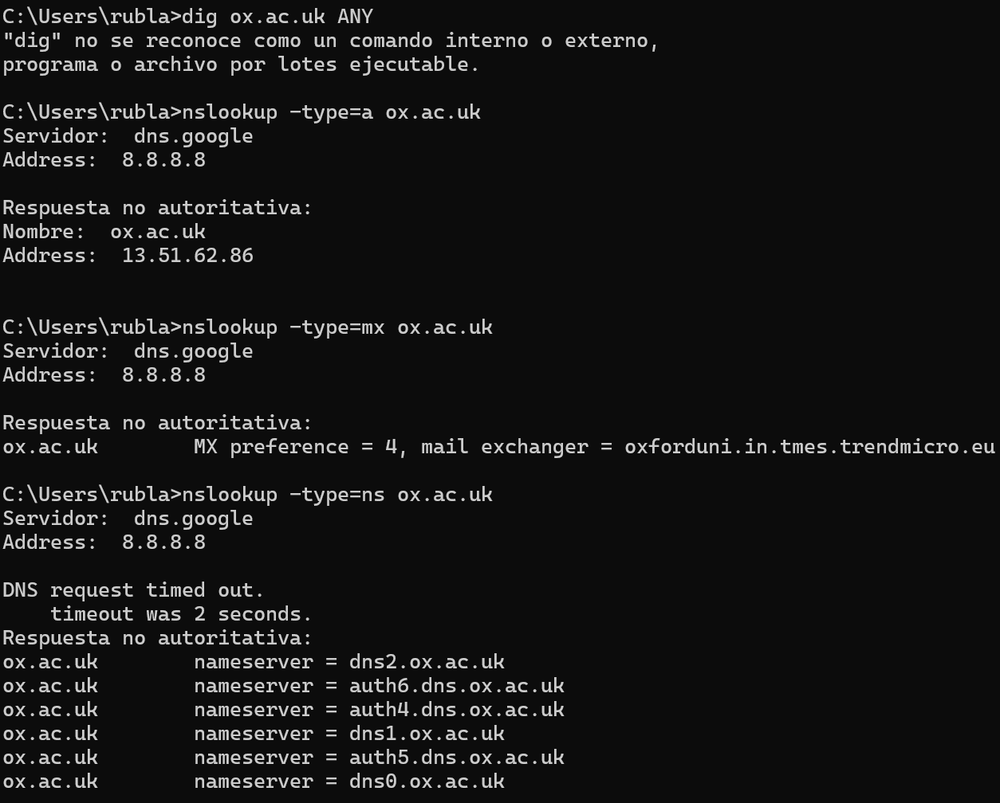
Then the remaining record types were queried with the host command.
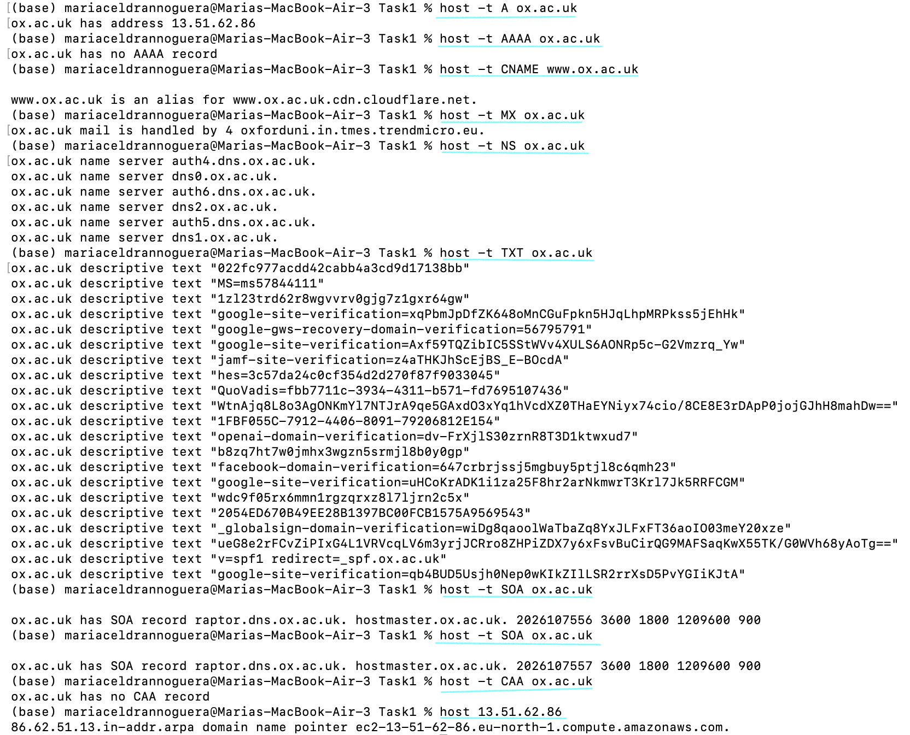
2.1.2.3. A computer somewhere outside Europe (e.g., an exotic country) and find all available information about the DNS settings of this computer.
We collect the DNS information for the Massachusetts Institute of Technology (mit.edu). We look for the same record types as for Oxford.
First, using nslookup, we queried the A, MX and NS records. Only the TLD is different (.edu, a restricted TLD), so the resolution starts from the root and is referred to a different TLD server.

Then the remaining record types were queried with the host command.
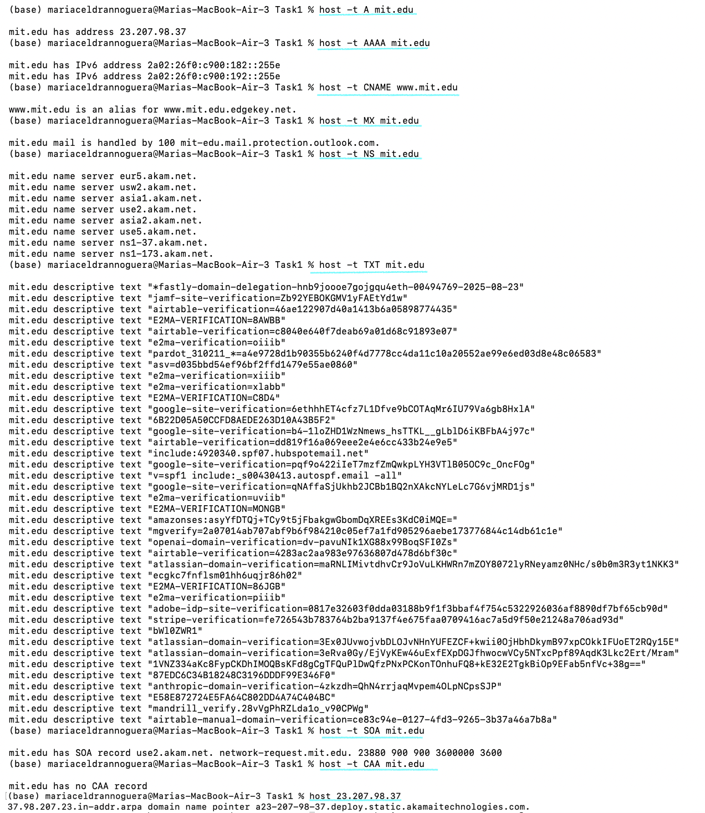
host.Compared with Oxford, MIT depends even more on external companies: its website, its name servers and its mail are all provided by third parties (Akamai and Microsoft). Oxford keeps its own six name servers, and only its mail and website are external. Also, MIT has IPv6 addresses and Oxford has none.
2.1.2.4. Verify DNS assignment for localhost.
Using the ping command, we verified that the operating system correctly resolves localhost to the IPv6 loopback address ::1 ( or 127.0.0.1 in IPv4).
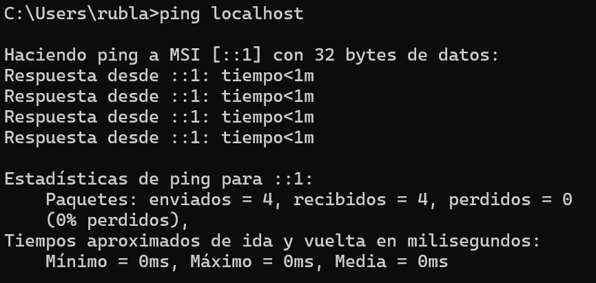
2.1.2.5. Flush the DNS memory on your computer using ipconfig.
The local DNS cache was cleared with the command ipconfig /flushdns. This removes the answers stored by the operating system, so the next query for any name has to be sent to the DNS server again.

ipconfig /flushdns.2.1.2.6. Change the hosts file such that when you enter ifeXX.com, the website msn.com will display (where XX is the number of your IFE group).
We first check for the IP address of msn.com using host.
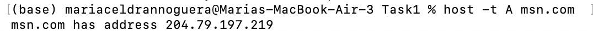
The hosts file of Windows is consulted before any DNS server. For this reason, we modified it to map the custom name ife36.com to the IP address of msn.com. The new mapping is added at the end of the file.
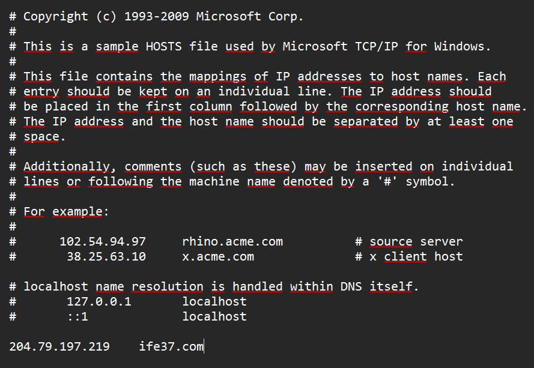
Because the hosts file is checked before any DNS server, the computer resolved the custom name locally and connected to the Microsoft server. Microsoft’s server returned a service error because of a Host header mismatch. The error therefore confirms that the redirection worked, since the request did reach the Microsoft servers, and proves that the local override was applied.

2.2. Mail system
2.2.1. Configure Thunderbird to send and receive e-mails from any e-mail server.
As the assignment allows any mail server, we used a Gmail account. Thunderbird is a mail client so it connects to the servers of the provider and needs two of them because receiving and sending use different protocols.
For receiving, the account uses IMAP with the server imap.gmail.com on port 993 and SSL/TLS. We chose IMAP because the messages stay on the server.
For sending, the account uses SMTP with the server smtp.gmail.com [port and security shown in the second screenshot].
Thunderbird was configured to connect to an existing e-mail account using the IMAP protocol on port 993, which is IMAP over TLS. We chose IMAP because it keeps the messages on the server and synchronizes folders between devices.
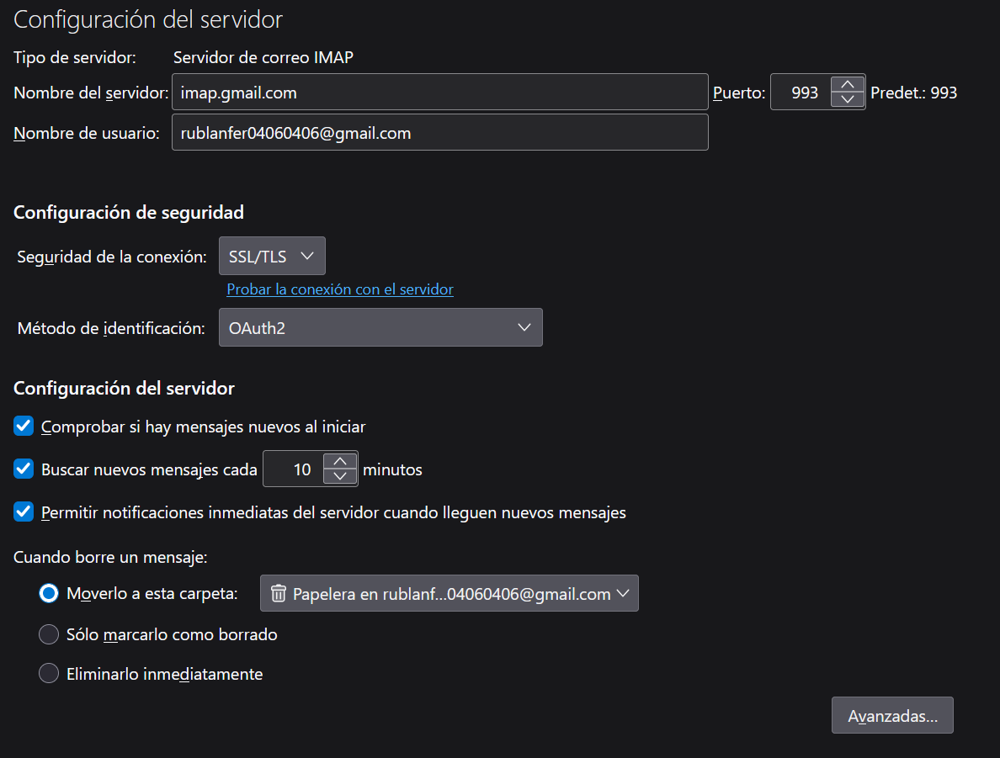
2.2.2. Send an e-mail to:
2.2.2.1. A non-existent mail server.
Sending an e-mail to a non-existent domain fails because the DNS resolver cannot find an MX record for the destination, so the sending server does not know where to deliver the message. The error is returned to the sender as a delivery failure.
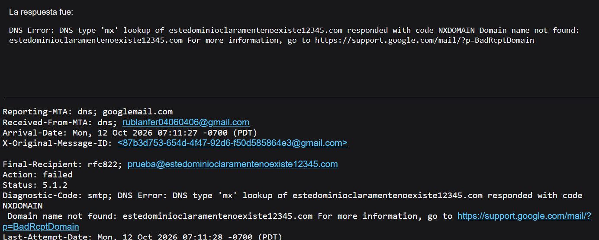
2.2.2.2. A non-existent user on an existent e-mail server.
In this case the domain exists, so the message reached the server. The server accepted the connection but sent back an error message because the requested username does not exist in its database. This corresponds to a permanent failure (a 5xx code).
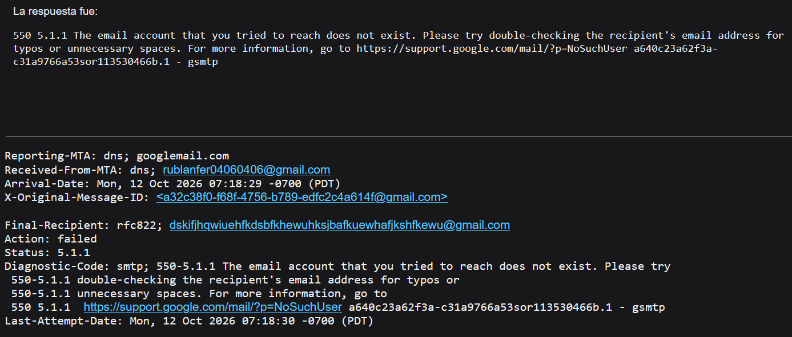
2.2.2.3. A server which is not an e-mail server (you must receive and understand the response).
We sent an e-mail to a domain that is not configured for mail services. The response shows that the administrator published a Null MX record, which explicitly states that the domain does not accept e-mail.

2.2.3. Using Wireshark, analyze the process of sending and receiving e-mails from Thunderbird. Identify all protocols involved in the process of sending and receiving e-mails.
Using Wireshark, we captured the network traffic generated by Thunderbird while sending and receiving an e-mail, filtering by ports 993 and 465/587. Port 993 carries IMAP over TLS for receiving, and ports 465 and 587 carry SMTP for sending, also encrypted. The protocols involved are DNS, TCP, TLS, IMAP and SMTP. Because of TLS, the content of the messages is not readable in the capture; only the handshake and encrypted data are visible.
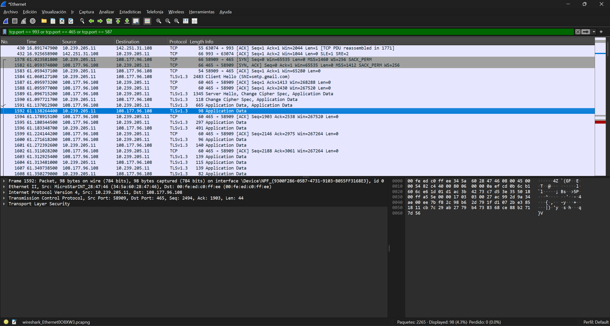
2.2.4. Send an e-mail by connecting to an SMTP server using telnet.
Because the university server was down, the e-mail was sent through an alternative SMTP server using Telnet. The session followed the SMTP dialogue described in section 1.2.1: EHLO, MAIL FROM, RCPT TO, DATA, the message ended by a single dot, and QUIT, with the server confirming each step with its status codes. Telnet shows the protocol in plain text, which makes the client-server communication easy to follow.
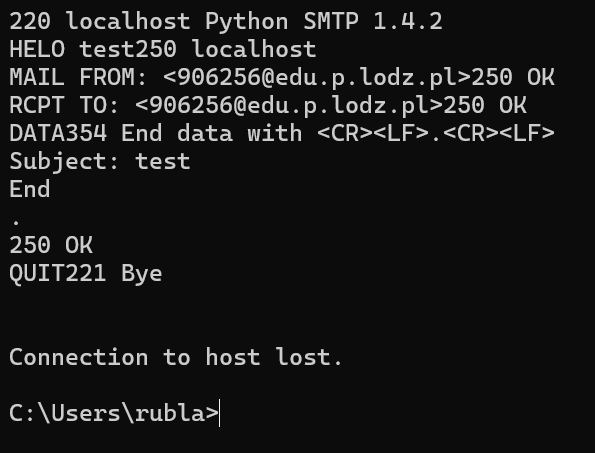